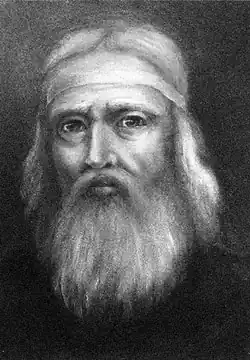
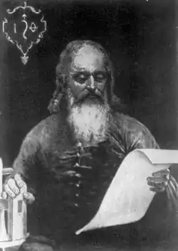

Федоров Іван
(бл. 1525-1583)
засновник книгодрукування в Україні Народився близько 1525 року в Москві. До 1553 року був дияконом у московській церкві Миколи Гостунського. 1551 року московський цар Іван Грозний і Стоглавий Собор, спираючись на думку просвітителя Максима Грека, вирішили з метою уникнення помилок у церковних книгах переписувачами запровадити друкування книг на взірець тих, що виходили у Греції, Італії. Близько 1552 року в Москві запроваджено друкарський верстат і літери, привезені із західноруських земель, і під керівництвом данського місіонера-протестанта Місінгейма та за допомогою диякона Івана Федорова, його підмайстрів Петра Мстиславця та Маруші Нефедьєва розпочато друкарську справу. 1564 року вийшла перша книга московського друку за участю Івана Федорова та Петра Мстиславця — "Апостол". Після смерті московського митрополита Макарія, протектора друкарської справи, почалися конфлікти між конкурентами, переписувачами книг і новозаснованою друкарнею, що переросли у ворожнечу, яка закінчилася вигнанням друкарів з Москви. Іван Федоров та Петро Мстиславець опинилися у Литві. На початку 1566 року вигнанці звернулися до гетьмана Великого князівства Литовського Григорія Ходкевича, мецената й просвітителя, який планував заснувати друкарню в Заблудові, з проханням прийняти їх. Іван Федоров і Петро Мстиславець закладають друкарню в Заблудові. 1568 року вийшло "Заблудівське Євангеліє", пізніше "Псалтир" та "Часословець". 1570 року друкування книг у Заблудові припинилося у зв’язку з хворобою Ходкевича та погіршенням його фінансових справ. 1569 року Заблудів залишив Мстиславець. 1572 року Іван Федоров переїжджає до Львова, де з допомогою духівництва, міщан та ремісників закладає нову друкарню. 25 лютого 1573 року друкар Іван Федоров почав друкувати першу відому нам друковану книгу в Україні — "Апостол". 15 лютого 1574 року "Апостол" побачив світ. Того року вийшов також "Буквар", перший навчальний посібник з граматики старослов’янської мови. Через деякий час Івана Федорова запрошує до себе князь Костянтин Острозький і з 1575 року він перебуває у нього на службі з метою видати слов’янську Біблію. Деякий час, з 1575 по 1576 рік, Федоров був управителем Дерманського монастиря поблизу Острога. 1676 року провадить підготовчі видавничі роботи, бере участь у діяльності вченого гуртка, до якого належали Герасим Смотрицький, Даміян Наливайко, Василь Суразький, які, ймовірно, допомагали Федорову готувати книги до друку. 12 липня 1580 року в Острозькій друкарні Іван Федоров надрукував "Острозьку біблію", наклад якої вийшов 12 серпня 1581 року. У 1583 році Федоров повернувся до Львова, заклав нову друкарню, але за браком коштів так і не зміг почати роботи. Щоб добути кошти, на замовлення короля Стефана Баторія відливає гармати. Того року князь Острозький на прохання кардинала Птолемео Галлі посилає Івана Федорова в Рим для надання допомоги в друкуванні. Тоді ж Федоров побував у Відні, щоб запропонувати австрійському імператору Рудольфу II свій винахід — скорострільну гармату. Великі борги та судові справи з кредиторами підірвали здоров’я Івана Федорова, і 15 грудня 1583 року він помер. Поховано його на цвинтарі в Онуфріївському монастирі у Львові. Перша друкована книжка в Європі побачила світ 1450 року в німецькому місті Майнці, в друкарні Гутенберга, і до кінця XV століття друкарні з’явилися майже в кожній європейській країні. Першим друкарем українських книжок був німець Швайпольт Фіоль, який надрукував у Кракові кирилицею 1491 року "Октоїх" та "Часословець". Обидва видання містять багато ознак живої української мови. Першим власне руським друкарем був Франциск Скорина, книги якого, видані у Вільні 1525 року, справили помітний вплив на раннє українське друкарство. З часу прийняття Люблінської унії І569 року, коли активізувався наступ католицизму на православ’я й почали виникати церковні православні братства, які боронили свою віру та національність, постала особливо гостро проблема освіти, задовольнити яку могло лише друкарство та друкована книга. Друкарня, заснована в 1572—1573 роках у Львові емігрантом, московитином Іваном Федоровим, поклала початок постійному українському друкарству. Нині дискутується факт першості Івана Федорова як українського першодрукаря, оскільки напис на надгробку свідчить, що він відновив занедбану раніше справу, проте роль його в тогочасному культурному житті важко переоцінити. Іван Федоров був безмежно відданий своїй справі. Тривалий час він наполегливо вчиться друкарства й різьбярства у Москві, винаходить нові зразки шрифтів і окрас книжкових на основі давніх традицій слов’янської рукописної книги та західноєвропейських взірців книжкового мистецтва. Підступи заздрісників змушують його залишити Москву й успішно почату друкарську справу, і він їде у край, де були кращі умови, щоб, за його словами, "розсівати по землі зерна духовні". Він кидає нажите місце у литовського гетьмана Ходкевича в Заблудові, щоб мати можливість продовжувати улюблену справу після смерті свого покровителя. Осівши у маєтку багатого й впливового в Польщі, Литві й Україні князя Костянтина Острозького, Іван Федоров виявляє себе як здібний організатор і невтомний ентузіаст друкарства. У лютому 1574 року у Львові Іван Федоров закінчив друкувати першу відому нам книгу в Україні — "Апостол", який повторював в основному московське видання 1564 року і закінчувався спеціально написаною післямовою, в якій описано історію створення львівської друкарні. Того самого року друкар видав один з найвидатніших своїх творів —"Буквар", що був першою спробою створення навчального посібника з граматики старосло-в’янської мови в історії української науки. "Буквар" призначався, очевидно, для спеціальної школи при друкарні Івана Федорова у Львові. Коли фінансові обставини склалися для нього несприятливо, Іван Федоров іде на службу до короля Стефана Баторія й береться відливати гармати за своєю технологією. У той час в Римі за наказом Папи Урбана VIII кардинал Птолемео Галлі вирішив удосконалити друкарські шрифти. "Острозька біблія" Івана Федорова була вже відома на сході Європи, тому звернулися по допомогу до князя Костянтина Острозького, який послав до Рима свого "дуже вмілого друкаря, щоб надати посильну допомогу". Людина всебічно обдарована, Іван Федоров був інженером-винахідником, який не тільки удосконалював шрифти, друкарський верстат, а й зробив відкриття в артилерійській справі. Навесні 1583 року він їде у Відень, щоб запропонувати австрійському імператорові Рудольфу II швидкострільну багатоствольну гармату, свого роду "катюшу" XVI століття. Як писав сам винахідник у листі до імператора, гармату можна було "розбирати на п’ятдесят, сто або, якщо потрібно, на двісті частин" і змонтувати за три дні і три ночі. На той час такої гармати світ ще не знав. Іван Федоров привіз гармату у Відень і продемонстрував її імператору. За словами майстра, "всі дуже хвалили його", але хотіли дізнатися про секрет без винагороди винахідникові. А Івану Федорову були конче потрібні кошти для продовження видання слов’янських друкованих книг. Тому він звертається до саксонського курфюрста Августа. Подальша доля винаходу Івана Федорова невідома, але цей факт його біографії засвідчує, окрім таланту, його наполегливість і підприємливість у досягненні мети. Останній рік життя, 1583-й, був трагічним для Івана Федорова. Не добувши достатніх коштів ні у Римі, ні у австрійського імператора, ні у саксонського курфюрста, він потрапляє в скруту, його майно, друкарське обладнання, книги описують за борги. Не витримавши цього, він захворів і в ніч з 5 на 6 грудня 1583 року помер на руках у сина Івана. Після смерті батька Іван продав свою палітурну майстерню, щоб розплатитися з батьковими боргами, а друкарню Івана Федорова викупили у гендлярів ентузіасти друкарської справи Львова, які заснували друкарню Львівського братства. Існують припущення, що Іван Федоров, перш ніж потрапити в Москву, закінчив Краківський університет і взагалі походив з Литви, з села Пітковичі. В архівах Краківського університету навіть було знайдено у 1969 році документ, що ступеня бакалавра в Кракові був удостоєний "Іван Федоров Москвитин". Як би там не було, але він добре знав традиції давньоруської книги, оскільки після приїзду з Москви в Україну швидко зумів на основі багатої української і російської народної орнаментики та кращих взірців тогочасного західноєвропейського книжкового мистецтва витворити свій стиль книжко— вої графіки, який був взірцем для наступних поколінь майстрів. Під опікою церкви, православних братств та шкіл відновлене Іваном Федоровим книгодрукування швидко розвивалося по всій Україні. Друкарні відкривалися наприкінці XVI — на початку XVII століття у багатьох містах та при монастирях, зокрема друкарня Львівського братства, друкарні в Крилосі, Стрятині, Дермані, Уневі, Почаєві, Чернігові, нарешті, у Києво-Печерській лаврі. Традиції Івана Федорова в книжковій графіці та в художньому оформленні плідно продовжували його учні: син Іван, друкар Гринь Іванович із Заблудова, Сачко Сенькович Сідляр, Сенько Корунка та Мина, чернець Онуфріївського монастиря у Львові, де була перша друкарня Івана Федорова, в якій після Івана Федорова нові "ремесници і люде ученые показалися", як пише в своєму листі 1586 року львівський єпископ Гедеон. У наш час у Львові діє Поліграфічна академія імені Івана Федорова, встановлено пам’ятник видатному українському та російському просвітителю. ** Ім’я Івана Федорова варте найщирішої пошани — це величний і прекрасний образ людини, що без краю віддана культурній праці. /**В.Романовський. 1937.**/